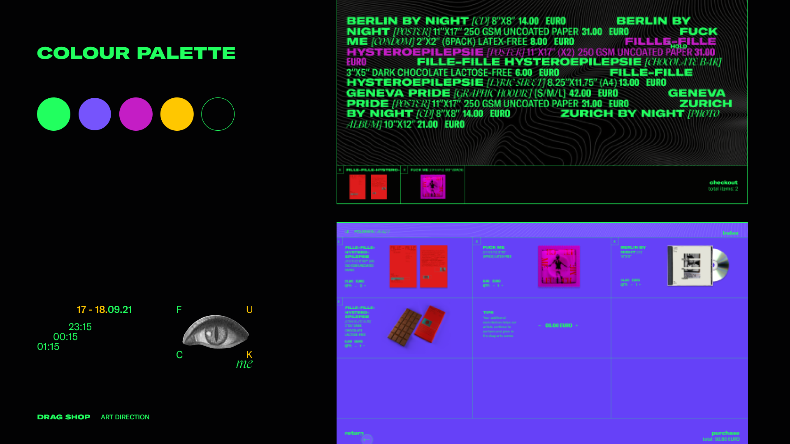
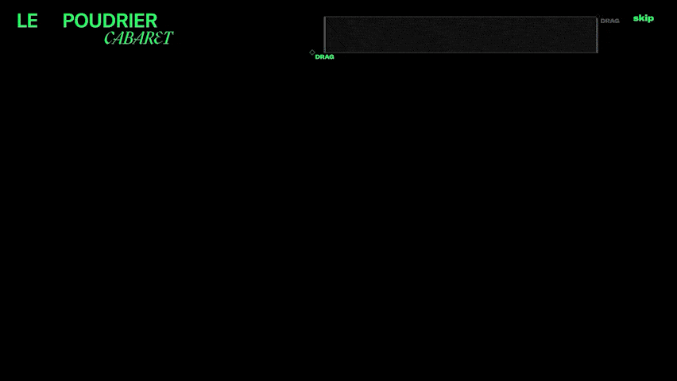
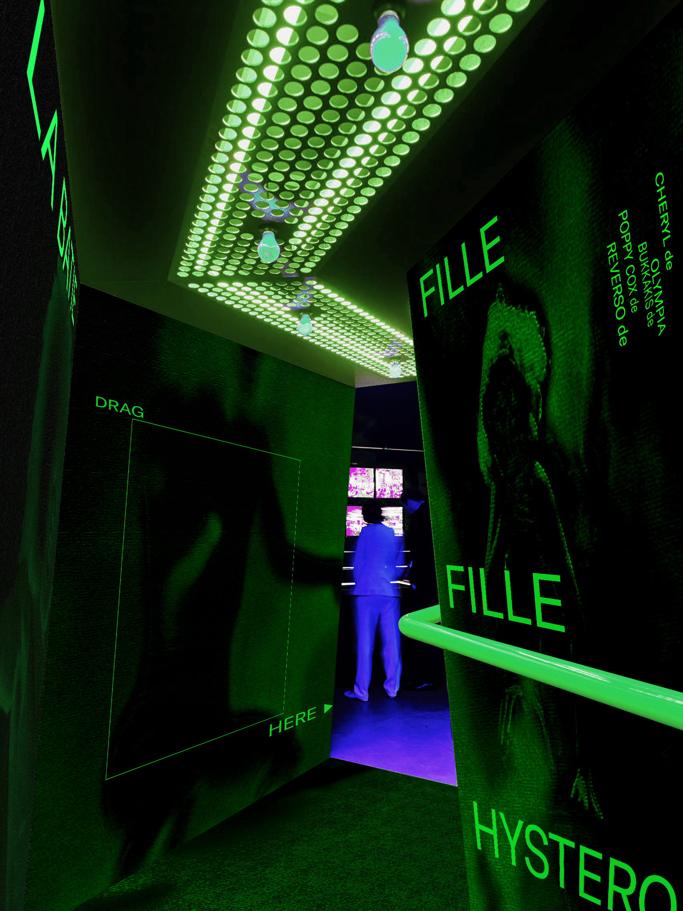

La Batie, Festival De Geneve
Le Poudrier Cabaret Microsite
My Roles
Content Design
Secondary Research
Visual Design
Prototyping
Interaction Design
Team
Avril Yang
Linda Liu
Michelle Illing
Thomas Tran
Time Frame
Spring 2022, for 4 weeks
(Janurary - February)
Project Context
Overview
A visual brand identity for La Batie Festival de Geneve, bringing inspiration from renowned designers Dan Friedman and Wim Crouwel. The purpose was not to copy their style but to research what made the masters successful and apply the learnings in a more contemporary style. Ultimately, the result is a microsite that pushes the boundaries of how expressive web interaction can be, while considering functional aspects such that users can understand the site.
About the Festival
La Batie is an annual festival occurring in the late summer in Geneva, Switzerland where artists abroad perform music, theatre, and contemporary dance performances. Le Poudrier Cabaret is the nightlife program of the festival, highlighted with shows and themes from drag artists.
A Highly Fluent Audience
The microsite is intended for an audience that is accustomed to artistic experiences, both in the physical world of attending events such as La Batie as well as through digital experiences. With this in mind, we were able to design a microsite dedicated to the drag artists of La Batie's Le Poudrier events. The final microsite is a post-show experience, evoking the unique memories of the cabaret shows and financially supporting the artists who get discriminated against in society.
Designer Precedents
Dan Friedman
Friedman's work inspired us to push the boundaries between legibility and unpredictability by engaging negative space through wide spacing of letters.
Wim Crouwel
From Wim Crouwel, we learned his need for consistency in a design and strict willingness to deviate from the grid.
Lateral Exploration of Visual Concepts
In the first two weeks of the project, we explored the design qualities through visual design experimentation including posters and visual assets that would attract attention to the La Batie Event. The purpose here was to rigorously experiment with different visual styles while keeping the learnings from the precedent studies of Friedman and Crouwel in focus. As the project progressed, we learned more from these designers which shifted our understanding of their work.
Typographic Grid
The first line of investigation explored a typographic grid where the structure of the grid is informed by small groups of typography and imagery. The negative space between the groupings creates pockets of space that command attention to particular elements in the hierarchy. In addition, stacking short segments of typography with close crop framing of content was explored to establish feelings of mystery and suspense by inviting the viewer to speculate what might be the remaining part of the frame.
Connecting the Graphic Elements
This line of investigation investigated a concept that fragmented typography about the page. While being careful about not causing visual distractions, the reader is invited to piece together the elements to understand the whole composition. The type is carefully placed in orientations that lead the eye throughout the composition. The structure of the geometric elements is to create order in the composition which allows the type to be more unpredictable.
Stacking Typography with Short Line Widths
The Third line of investigation we surfaced was driven by stacking narrow images and text with short line-lengths, which created tension by emphasizing asymmetry through diagonal lines. Pockets of negative space are sculpted by the asymmetrical elements which direct the eye towards the next element in the composition.
Pivot Point
Focusing on One Direction
The next portion of the project required the team to select one direction to pursue further for web interactions. As we were still looking to explore other visual design concepts, we took a closer look at the qualities from our precedent studies to see where the greatest opportunity was. At this point, we acknowledged that while the qualities we pulled from Friedman and Crouwel were clear, they needed to be more compelling to engage an audience of talented designers.
A large commitment the team had to make was placing personal biases aside to determine which direction the team was feeling strongest about, while also considering the feedback from the teaching team and guest critics. Ultimately, we decided the graphical concept of stacking typography with close crop framing of images had the most potential to intrigue an audience.
Exploring Interaction Design
Touching back on the intended audience of this website; they are a highly fluent audience of individuals who welcome a visual challenge and intriguing path as long as they can still navigate their way throughout the site.
We explored three lines of investigation once again, each being a small sample of what the final site might look like, and further employing expressive interactions over functional ones to intrigue the audience. To help frame this exploration, a fully functional site could be an e-commerce site you may see for a clothing brand. In this project's context, even the site we identified as most functional is quite expressive compared to fully functional sites.
Direction 1
Mid-Expressive
The strategy that went into designing this site was to illustrate the provocative and dynamic personalities of the performers who play an integral part in building the atmosphere of the cabaret shows. The content of the site was to be all about the performers who are often marginalized by society and don't have the opportunity to tell their story of what drag is.
The microsite employs fast-paced interactions that shock and excite the user, drawing a similarity to the experience of a cabaret show and the exuberant personalities of the performers.

Direction 2
Expressive
The driving principle of this microsite exploration was to display the interconnectedness of the four La Cabaret Poudrier performances by displaying elements of each event on screen at the same time. The intent is to give the user control of which content is displayed by resizing the four quadrants, changing the content in each quadrant depending on its relative size.

Direction 3
Highly Expressive
Our most expressive site is intended to establish feelings of mystery and curiosity for viewers to discover the content of the site. One of the ways this was explored was by showing the user details of the event in small bits which teased the performance and incentivized the user to come and see the show live.

This was our most expressive microsite and one that we were interested in pursuing further while combining interaction and content strategies from our other two examples. The critique that we received was that the site felt like a teaser to lead the user to more content, which is something we explored deeply in the final iteration.
Pivot Point
Final Direction
We saw potential with all three of the microsite samples we designed in the previous iterations; however, we needed to focus on one direction to pursue. The mysterious nature and vibrant energy of the most expressive direction aligned well with the drag performances of Le Cabaret. This direction also had the opportunity to sprinkle in some of the interactions from the other two directions while maintaining consistent visuals and interactions.
Insights and Framing
From doing a deep dive research study into what drag artists and drag shows are about, we synthesized three insights and framing questions that ultimately drove the content design of the microsite and gave the site a meaningful purpose. The project also shifted from creating a pre-show excitement that was intended to direct attention to the performances, to a post-show experience that serves as a reminder of the event and reminds the user of the shows.
The three insights are summarized as:
- Showcasing drag as a deserving art form that similarly captivates the audience as a live drag show
- Designing a unique and enjoyable experience that differs from typical experiences users are accustomed to
- Re-engaging the audience post-show to help financially support the drag artists who tend to rely on audience tips during shows as a primary source of income
Value Proposition
For users who have attended the Cabaret shows at La Batie Festival, the microsite or Drag Shop as we have named it, allows users to purchase merchandise tied to the live shows and further financially support the artists while re-discovering the experience of the performances.
Art Direction
Colour Palette
Without distracting or overcomplicating the rationale, the colour palette and graphic visuals of the microsite serve to re-immerse the users in the exuberant energy of Le Cabaret's drag scene.
Texture
The background texture of the home screen has a rippling effect as the user moves their cursor about the screen. This effect intends to promote the user to explore the page and discover.

Content Strategy
One of my lead roles in the project was the strategy for revealing the content of the microsite, which was separated into what we were trying to do, how we would implement it, and why was it important. Early on, this helped the team frame our focus on what exactly we were trying to achieve with the microsite.
What
Anticipating that users have already seen the event allowed us to keep the content surrounding the merchandise more minimalist and avoid non-essential event details, focusing instead on short pieces of content that trigger the user's memory of the cabaret event.
How
Users are able to re-discover the cabaret performances with similar excitement as though they are watching the shows for the first time. The Drag Shop re-immerses the user in the cabaret shows by evoking memorable experiences through the discovery of the content.
Why
Many drag artists are severely underpaid for their shows and their income relies primarily on tips from audience members. To further support drag artists, users re-engage with the shows by interacting with the site and can provide additional financial support at the checkout page.
Interaction Strategy
A goal with the interaction strategy for the microsite beyond incentivizing the user to explore the content was developing a consistent language for the interactions throughout the site. While the interactions were very expressive, the consistency helps users expect where interactions and be able to navigate the site.
Drag to Discover
The drag interaction reveals the content of a seemingly blank canvas in bits and pieces. Dragging is a slow interaction, which forces the user to be more engaged with the interactions and focus on a single piece of content.

Scramble
By scrambling the type and imagery during the drag, the identity of the content is masked until the user commits to the drag by releasing their cursor. The user can guess at what the content might be based on their experience of the show, leading up to an "aha" moment when the content lands as the user recalls the event.
Hold to Unveil
When users click and hold a piece of content from the home page, the merchandise tied to the particular event and a looping video of the event is revealed. This interaction re-engages the user with the event show and commands the user's attention to drag the merchandise to the cart.

Reminder of the Physical Experience
Entrance to Le Cabaret Show
Beyond the microsite serves as a reminder of the experience of the shows themselves. We designed a mockup of what the interior space might look like as the viewer walks into a cabaret performance. This creates a build-up of intrigue through a mysterious element as the viewer walks through a dark and irregular-shaped hallway before the exuberant energy of the open purple space is unveiled to them where the event takes place.
Reflection
Over the weeks involved in this project, I learned much about the design process and how to rapidly move a project forward in new directions. Ensuring to think in a lateral process, not getting attached to an idea, and when a good time to pivot the project is when it means achieving a greater final result. Additionally, I learned how deep research and insights into a problem space can drive a project to the next level beyond what visual design can do alone. It's the combination of having a strong driving purpose mixed with great visuals that result in the most successful design projects.